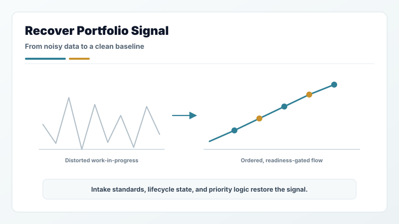
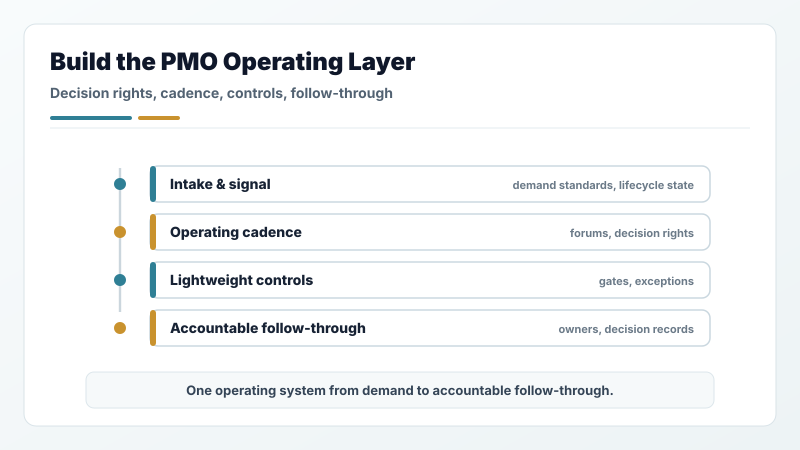
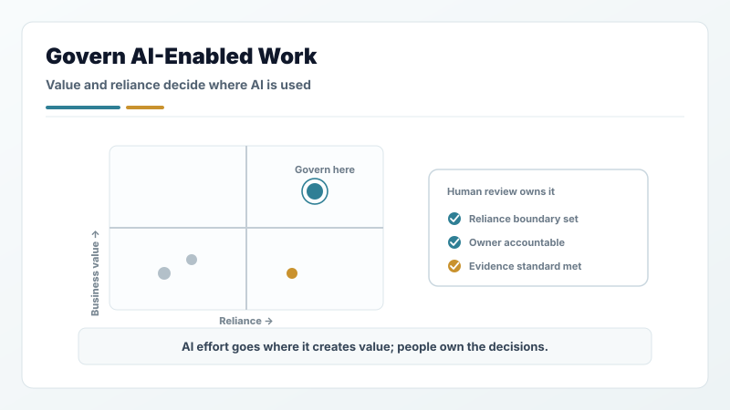
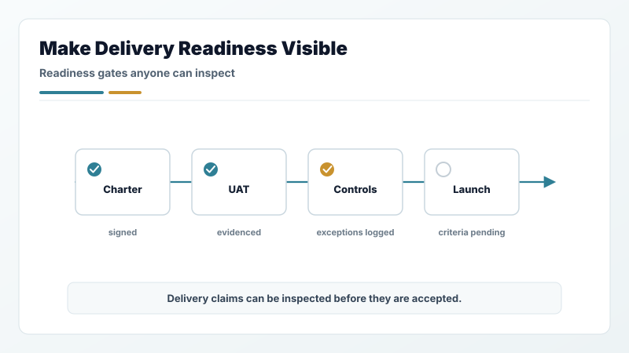
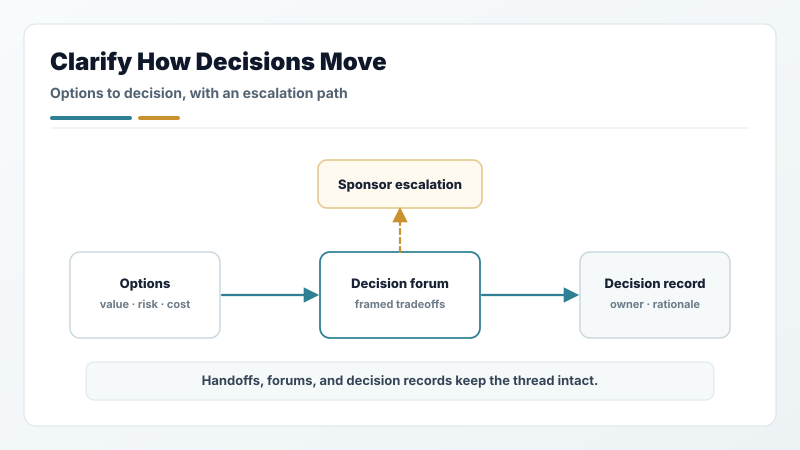
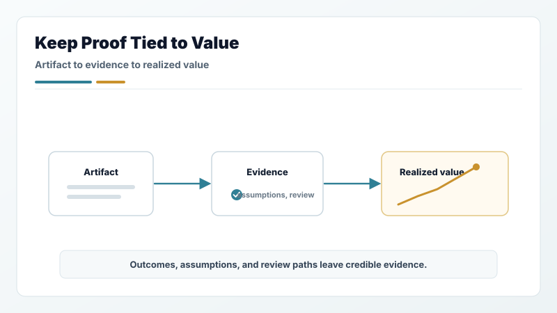
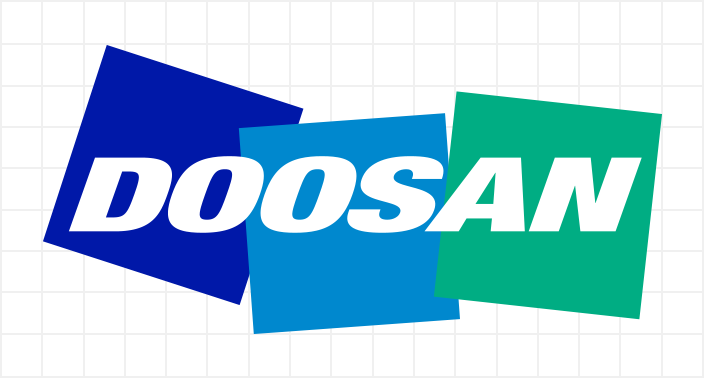

What I do
When the portfolio stops telling the truth, I rebuild the signal.
I am a Principal / Director-level PMO, portfolio governance, program operations, and executive operations leader. I work where demand is scattered, ownership is unclear, tradeoffs are hidden, readiness is overclaimed, and leaders need a cleaner operating system for decisions and follow-through.
For Program Manager, Project Manager, PMO Manager, and Portfolio Manager roles, the proof comes from real operating environments at Microsoft, T-Mobile, Avalara, Doosan GridTech, and MISO Energy, under CIO, CFO, CTO, and COO sponsorship: multibillion-dollar platform exposure, portfolios of several hundred initiatives, nine-figure capital programs, and global partner ecosystems. Read the case studies.

Recover portfolio signal
Replace ad hoc demand lists with intake standards, lifecycle state, priority logic, ownership, and executive-ready portfolio views.

Build the PMO operating layer
Stand up or reshape PMO functions around decision rights, operating cadence, governance forums, lightweight controls, and accountable follow-through.

Govern AI-enabled work
Turn AI ideas and artifacts into reviewable workflow: business value, reliance boundaries, human review gates, owner accountability, and evidence standards.

Make delivery readiness visible
Connect charters, risks, dependencies, UAT, launch criteria, exceptions, and value tracking so delivery claims can be inspected before they are accepted.

Clarify how decisions move
Design the handoffs, forums, escalation paths, review materials, and decision records that let leaders compare choices without losing the thread.

Keep evidence tied to value
Structure outcomes, assumptions, artifacts, and review paths so portfolio work leaves credible evidence instead of scattered status fragments.
Featured case studies
The proof is operational, not ornamental.
Each case study walks through the operating problem, the structure I put in place, and what changed when governance, cadence, readiness, and follow-through became explicit.
What sponsors say
The executives who sponsored the work, in their own words.
Excerpts from LinkedIn recommendations. Attribution is by role; the full recommendations are public on LinkedIn.

Doosan GridTechAn essential partner in managing multiple cross-functional complex projects concurrently … always able to quickly help me morph complex plans into forms more easily digestible by executives and corporate audiences.
Avalara
The tremendous work and discipline he has brought to the Platform Services Team … a huge step forward for our billing processes as well as our company.
MicrosoftSubstantially raised the bar for our team at Microsoft during an 18-month engagement … delivered multiple complex projects while concurrently strengthening our overall launch compliance program.
Doosan GridTechMarco’s measured approach contributed to much improved outcomes and provided certainty where there had previously been none. His strategic direction made us better and will make any team he joins better, too.
T‑Mobile
He navigated a complex portfolio of initiatives with ease and became a central resource for my whole team to go to with questions.
MicrosoftFor whatever project or task he took on, he did it with the appearance of it being effortless. His strengths are the way he works with people, quickly understands the goals of a project, and delivers beyond expectations.
Doosan GridTechA great combination of being easy to work with, precise in how he approaches timelines and deliverables, and communicates well with executive management both internally and at our customers.
He excels at PMO leadership, balancing innovation with analytical precision … a solutions-oriented critical thinker who can quickly analyze complex situations and determine the best path forward.
Doosan GridTechI watched him walk into contentious meetings between engineering, field operations, and C-suite executives — groups that had been talking past each other for months — and within two sessions, have everyone aligned on priorities and next steps.
We delivered a very high profile, business critical project virtually from inception through ship and I can honestly say we would not have made it without him.
Doosan GridTechHis diplomatic and often democratic approach brought right-sized levels of structure to our processes exactly when they were needed, enabling short, medium, and long-term successes.
He successfully managed a complex portfolio of initiatives, provided invaluable insights to leadership, drove process improvements, and encouraged technology adoption.
Walkthroughs
How the work moves from noise to accountable review
Each walkthrough shows the operating logic behind the portfolio: how unclear demand, hidden tradeoffs, AI workflow ideas, readiness gaps, and proof questions become reviewable work.
 Demand
Demand
Messy demand to executive review
Unstructured intake to governed pipeline — prioritized, sequenced, and ready for leadership decisions.
 Decisions
Decisions
Tradeoffs to executive decision
Structured tradeoff analysis and escalation path that produces clear, defensible decisions.
 AI Governance
AI Governance
AI idea to governed artifact
Full lifecycle from AI initiative intake through artifact governance and client-safe proof review.
 Delivery Start
Delivery Start
Approved intent to chartered start
From approved initiative to fully chartered delivery — scope, RAID, stakeholders, and baseline locked.
 Value
Value
Delivery readiness to value realization
Commissioning, hypercare, and value tracking — closing the loop from delivery to confirmed outcome.
 Proof
Proof
Artifact to client-safe proof
Sanitization, evidence architecture, and employer-facing proof packaging for portfolio outputs.
 External delivery
External delivery
Partner ecosystem governance
Qualification, readiness evidence, escalation paths, and follow-through for partner and external delivery networks.
Methods · Modules and PoCs
Reusable structures behind the work
The modules are client-safe examples of the operating mechanics: intake, prioritization, business cases, charters, readiness, value realization, proof review, and AI workflow governance.

Next step
Ready to discuss a remote role?
Best-fit conversations are Program Manager, Project Manager, PMO Manager, Portfolio Manager, and senior PMO or portfolio-governance roles where the operating layer has to get stronger.